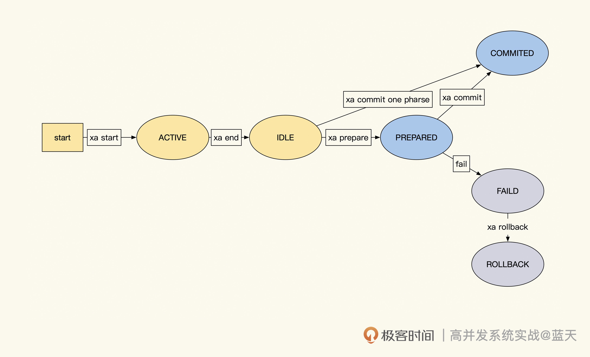
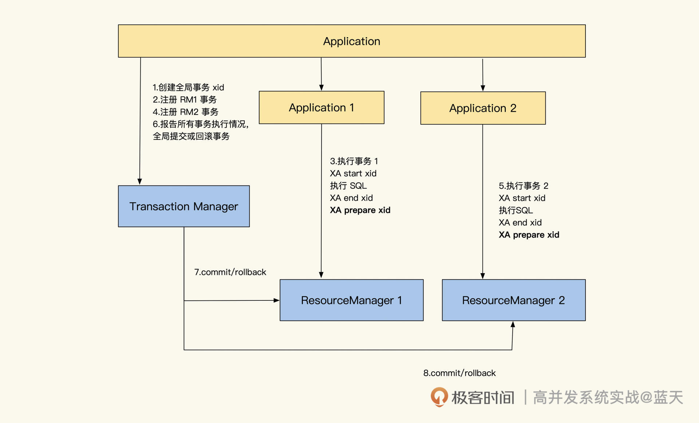
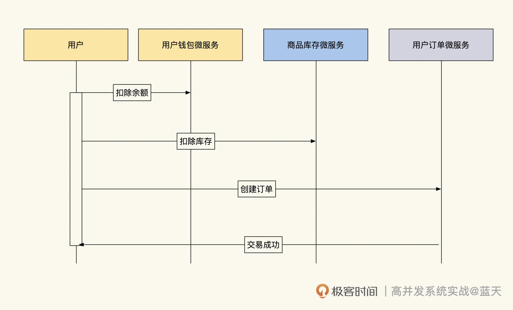
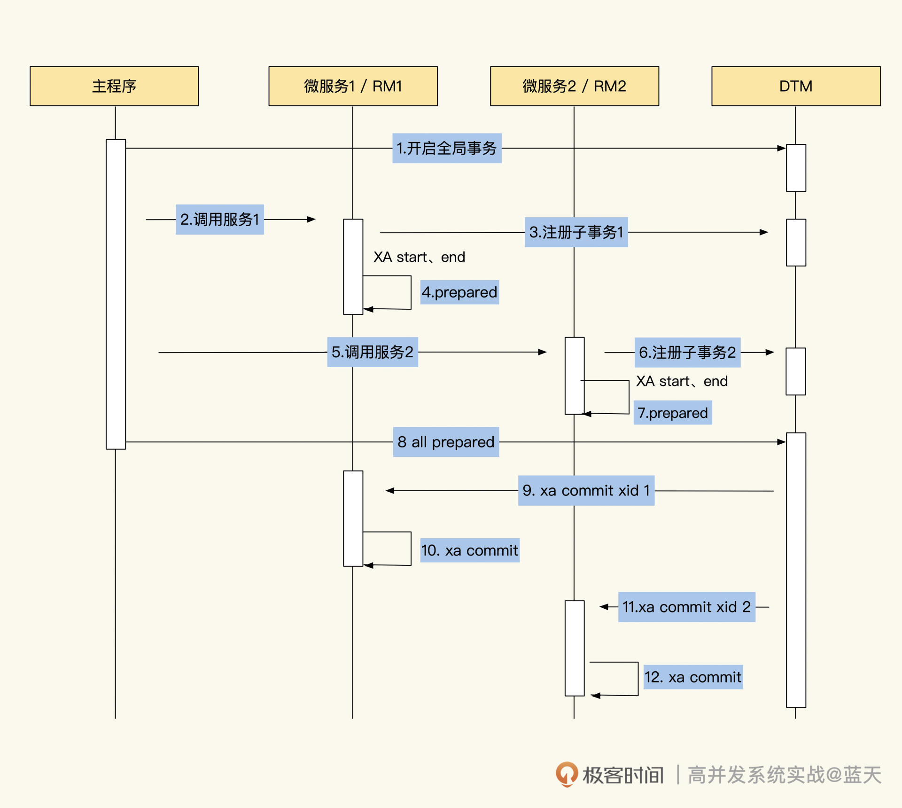
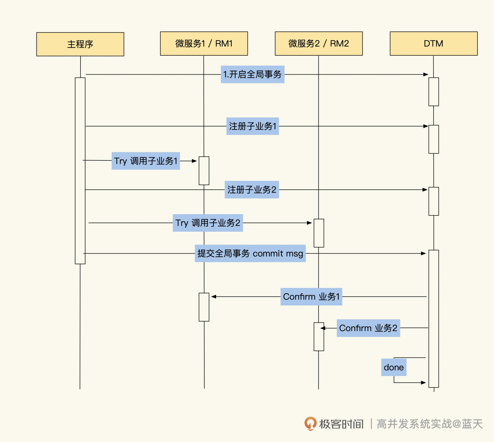

- 00 开篇词 高并发系统，技术实力的试金石.md.html
- 01 结构梳理：大并发下，你的数据库表可能成为性能隐患.md.html
- 02 缓存一致：读多写少时，如何解决数据更新缓存不同步？.md.html
- 03 Token：如何降低用户身份鉴权的流量压力？.md.html
- 04 同城双活：如何实现机房之间的数据同步？.md.html
- 05 共识Raft：如何保证多机房数据的一致性？.md.html
- 06 领域拆分：如何合理地拆分系统？.md.html
- 07 强一致锁：如何解决高并发下的库存争抢问题？.md.html
- 08 系统隔离：如何应对高并发流量冲击？.md.html
- 09 分布式事务：多服务的2PC、TCC都是怎么实现的？.md.html
- 10 稀疏索引：为什么高并发写不推荐关系数据库？.md.html
- 11 链路追踪：如何定制一个分布式链路跟踪系统 ？.md.html
- 12 引擎分片：Elasticsearch如何实现大数据检索？.md.html
- 13 实时统计：链路跟踪实时计算中的实用算法.md.html
- 14 跳数索引：后起新秀ClickHouse.md.html
- 15 实践方案：如何用C++自实现链路跟踪？.md.html
- 16 本地缓存：用本地缓存做服务会遇到哪些坑？.md.html
- 17 业务脚本：为什么说可编程订阅式缓存服务更有用？.md.html
- 18 流量拆分：如何通过架构设计缓解流量压力？.md.html
- 19 流量调度：DNS、全站加速及机房负载均衡.md.html
- 20 数据引擎：统一缓存数据平台.md.html
- 21 业务缓存：元数据服务如何实现？.md.html
- 22 存储成本：如何推算日志中心的实现成本？.md.html
- 23 网关编程：如何通过用户网关和缓存降低研发成本？.md.html
- 24 性能压测：压测不完善，效果减一半.md.html
- 答疑课堂 思考题答案（一）.md.html
- 结束语 为者常成，行者常至.md.html
- 捐赠
09 分布式事务：多服务的2PC、TCC都是怎么实现的？
你好，我是徐长龙，今天这节课我们聊聊分布式事务。
目前业界流行微服务，DDD领域驱动设计也随之流行起来。DDD是一种拆分微服务的方法，它从业务流程的视角从上往下拆分领域，通过聚合根关联多个领域，将多个流程聚合在一起，形成独立的服务。相比由数据表结构设计出的微服务，DDD这种方式更加合理，但也加大了分布式事务的实现难度。
在传统的分布式事务实现方式中，我们普遍会将一个完整的事务放在一个独立的项目中统一维护，并在一个数据库中统一处理所有的操作。这样在出现问题时，直接一起回滚，即可保证数据的互斥和统一性。
不过，这种方式的服务复用性和隔离性较差，很多核心业务为了事务的一致性只能聚合在一起。
为了保证一致性，事务在执行期间会互斥锁定大量的数据，导致服务整体性能存在瓶颈。而非核心业务要想在隔离要求高的系统架构中，实现跨微服务的事务，难度更大，因为核心业务基本不会配合非核心业务做改造，再加上核心业务经常随业务需求改动（聚合的业务过多），结果就是非核心业务没法做事务，核心业务也无法做个性化改造。
也正因为如此，多个系统要想在互动的同时保持事务一致性，是一个令人头疼的问题，业内很多非核心业务无法和核心模块一起开启事务，经常出现操作出错，需要人工补偿修复的情况。
尤其在微服务架构或用DDD方式实现的系统中，服务被拆分得更细，并且都是独立部署，拥有独立的数据库，这就导致要想保持事务一致性实现就更难了，因此跨越多个服务实现分布式事务已成为刚需。
好在目前业内有很多实现分布式事务的方式，比如2PC、3PC、TCC等，但究竟用哪种比较合适呢？这是我们需要重点关注的。因此，这节课我会带你对分布式事务做一些讨论，让你对分布式事务有更深的认识，帮你做出更好的决策。
XA协议
在讲分布式事务之前，我们先认识一下XA协议。
XA协议是一个很流行的分布式事务协议，可以很好地支撑我们实现分布式事务，比如常见的2PC、3PC等。这个协议适合在多个数据库中，协调分布式事务，目前Oracle、DB2、MySQL 5.7.7以上版本都支持它（虽然有很多bug）。而理解了XA协议，对我们深入了解分布式事务的本质很有帮助。
支持XA协议的数据库可以在客户端断开的情况下，将执行好的业务结果暂存起来，直到另外一个进程确认才会最终提交或回滚事务，这样就能轻松实现多个数据库的事务一致性。
在XA协议里有三个主要的角色：
- 应用（AP）：应用是具体的业务逻辑代码实现，业务逻辑通过请求事务协调器开启全局事务，在事务协调器注册多个子事务后，业务代码会依次给所有参与事务的子业务下发请求。待所有子业务提交成功后，业务代码根据返回情况告诉事务协调器各个子事务的执行情况，由事务协调器决策子事务是提交还是回滚（有些实现是事务协调器发请求给子服务）。
- 事务协调器（TM）：用于创建主事务，同时协调各个子事务。事务协调器会根据各个子事务的执行情况，决策这些子事务最终是提交执行结果，还是回滚执行结果。此外，事务协调器很多时候还会自动帮我们提交事务；
- 资源管理器（RM）：是一种支持事务或XA协议的数据资源，比如MySQL、Redis等。
另外，XA还对分布式事务规定了两个阶段：Prepare阶段和Commit阶段。
在Prepare阶段，事务协调器会通过xid（事务唯一标识，由业务或事务协调器生成）协调多个资源管理器执行子事务，所有子事务执行成功后会向事务协调器汇报。
这时的子事务执行成功是指事务内SQL执行成功，并没有执行事务的最终commit（提交），所有子事务是提交还是回滚，需要等事务协调器做最终决策。
接着分布式事务进入Commit阶段：当事务协调器收到所有资源管理器成功执行子事务的消息后，会记录事务执行成功，并对子事务做真正提交。如果Prepare阶段有子事务失败，或者事务协调器在一段时间内没有收到所有子事务执行成功的消息，就会通知所有资源管理器对子事务执行回滚的操作。
需要说明的是，每个子事务都有多个状态，每个状态的流转情况如下图所示：

如上图，子事务有四个阶段的状态：
- ACTIVE：子事务SQL正在执行中；
- IDLE：子事务执行完毕等待切换Prepared状态，如果本次操作不参与回滚，就可以直接提交完成；
- PREPARED：子事务执行完毕，等待其他服务实例的子事务全部Ready。
- COMMITED/FAILED：所有子事务执行成功/失败后，一起提交或回滚。
下面我们来看XA协调两个事务的具体流程，这里我拿最常见的2PC方式为例进行讲解。

如上图所示，在协调两个服务Application 1和Application 2时，业务会先请求事务协调器创建全局事务，同时生成全局事务的唯一标识xid，然后再在事务协调器里分别注册两个子事务，生成每个子事务对应的xid。这里说明一下，xid由gtrid+bqual+formatID组成，多个子事务的gtrid是相同的，但其他部分必须区分开，防止这些服务在一个数据库下。
那么有了子事务的xid，被请求的服务会通过xid标识开启XA子事务，让XA子事务执行业务操作。当事务数据操作都执行完毕后，子事务会执行Prepare指令，将子事务标注为Prepared状态，然后以同样的方式执行xid2事务。
所有子事务执行完毕后，Prepared状态的XA事务会暂存在MySQL中，即使业务暂时断开，事务也会存在。这时，业务代码请求事务协调器通知所有申请的子事务全部执行成功。与此同时，TM会通知RM1和RM2执行最终的commit（或调用每个业务封装的提交接口）。
至此，整个事务流程执行完毕。而在Prepare阶段，如果有子事务执行失败，程序或事务协调器，就会通知所有已经在Prepared状态的事务执行回滚。
以上就是XA协议实现多个子系统的事务一致性的过程，可以说大部分的分布式事务都是使用类似的方式实现的。下面我们通过一个案例，看看XA协议在MySQL中的指令是如何使用的。
MySQL XA的2PC分布式事务
在进入案例之前，你可以先了解一下MySQL中，所有关XA协议的指令集，以方便接下来的学习：
# 开启一个事务Id为xid的XA子事务
# gtrid是事务主ID，bqual是子事务标识
# formatid是数据类型标注 类似format type
XA {START|BEGIN} xid[gtrid[,bqual[,format_id]]] [JOIN|RESUME]
# 结束xid的子事务，这个事务会标注为IDLE状态
# 如果IDEL状态直接执行XA COMMIT提交那么就是 1PC
XA END xid [SUSPEND [FOR MIGRATE]]
# 让子事务处于Prepared状态，等待其他子事务处理后，后续统一最终提交或回滚
# 另外 在这个操作之前如果断开链接，之前执行的事务都会回滚
XA PREPARE xid
# 上面不同子事务 用不同的xid(gtrid一致，如果在一个实例bqual必须不同)
# 指定xid子事务最终提交
XA COMMIT xid [ONE PHASE]
XA ROLLBACK xid 子事务最终回滚
# 查看处于Prepared状态的事务
# 我们用这个来确认事务进展情况，借此决定是否整体提交
# 即使提交链接断开了，我们用这个仍旧能看到所有的PrepareD状态的事务
#
XA RECOVER [CONVERT XID]
言归正传，我们以购物场景为例，在购物的整个事务流程中，需要协调的服务有三个：用户钱包、商品库存和用户购物订单，它们的数据都放在私有的数据库中。

按照业务流程，用户在购买商品时，系统需要执行扣库存、生成购物订单和扣除用户账户余额的操作 。其中，“扣库存”和“扣除用户账户余额”是为了保证数据的准确和一致性，所以扣减过程中，要在事务操作期间锁定互斥的其他线程操作保证一致性，然后通过2PC方式，对三个服务实现事务协调。
具体实现代码如下：
package main
import (
"database/sql"
"fmt"
_ "github.com/go-sql-driver/mysql"
"strconv"
"time"
)
func main() {
// 库存的连接
stockDb, err := sql.Open("mysql", "root:paswd@tcp(127.0.0.1:3306)/shop_product_stock")
if err != nil {
panic(err.Error())
}
defer stockDb.Close()
//订单的连接
orderDb, err := sql.Open("mysql", "root:paswd@tcp(127.0.0.1:3307)/shop_order")
if err != nil {
panic(err.Error())
}
defer orderDb.Close()
//钱包的连接
moneyDb, err := sql.Open("mysql", "root:paswd@tcp(127.0.0.1:3308)/user_money_bag")
if err != nil {
panic(err.Error())
}
defer moneyDb.Close()
// 生成xid(如果在同一个数据库，子事务不能使用相同xid)
xid := strconv.FormatInt(time.Now().UnixMilli(), 10)
//如果后续执行过程有报错，那么回滚所有子事务
defer func() {
if err := recover(); err != nil {
stockDb.Exec("XA ROLLBACK ?", xid)
orderDb.Exec("XA ROLLBACK ?", xid)
moneyDb.Exec("XA ROLLBACK ?", xid)
}
}()
// 第一阶段 Prepare
// 库存 子事务启动
if _, err = stockDb.Exec("XA START ?", xid); err != nil {
panic(err.Error())
}
//扣除库存，这里省略了数据行锁操作
if _, err = stockDb.Exec("update product_stock set stock=stock-1 where id =1"); err != nil {
panic(err.Error())
}
//事务执行结束
if _, err = stockDb.Exec("XA END ?", xid); err != nil {
panic(err.Error())
}
//设置库存任务为Prepared状态
if _, err = stockDb.Exec("XA PREPARE ?", xid); err != nil {
panic(err.Error())
}
// 订单 子事务启动
if _, err = orderDb.Exec("XA START ?", xid); err != nil {
panic(err.Error())
}
//创建订单
if _, err = orderDb.Exec("insert shop_order(id,pid,xx) value (1,2,3)"); err != nil {
panic(err.Error())
}
//事务执行结束
if _, err = orderDb.Exec("XA END ?", xid); err != nil {
panic(err.Error())
}
//设置任务为Prepared状态
if _, err = orderDb.Exec("XA PREPARE ?", xid); err != nil {
panic(err.Error())
}
// 钱包 子事务启动
if _, err = moneyDb.Exec("XA START ?", xid); err != nil {
panic(err.Error())
}
//扣减用户账户现金，这里省略了数据行锁操作
if _, err = moneyDb.Exec("update user_money_bag set money=money-1 where id =9527"); err != nil {
panic(err.Error())
}
//事务执行结束
if _, err = moneyDb.Exec("XA END ?", xid); err != nil {
panic(err.Error())
}
//设置任务为Prepared状态
if _, err = moneyDb.Exec("XA PREPARE ?", xid); err != nil {
panic(err.Error())
}
// 在这时，如果链接断开、Prepared状态的XA事务仍旧在MySQL存在
// 任意一个链接调用XA RECOVER都能够看到这三个没有最终提交的事务
// --------
// 第二阶段 运行到这里没有任何问题
// 那么执行 commit
// --------
if _, err = stockDb.Exec("XA COMMIT ?", xid); err != nil {
panic(err.Error())
}
if _, err = orderDb.Exec("XA COMMIT ?", xid); err != nil {
panic(err.Error())
}
if _, err = moneyDb.Exec("XA COMMIT ?", xid); err != nil {
panic(err.Error())
}
//到这里全部流程完毕
}
可以看到，MySQL通过XA指令轻松实现了多个库或多个服务的事务一致性提交。
可能你会想，为什么在上面的代码中没有看到事务协调器的相关操作？这里我们不妨去掉子业务的具体实现，用API调用的方式看一下是怎么回事：
package main
import (
"database/sql"
"fmt"
_ "github.com/go-sql-driver/mysql"
"strconv"
"time"
)
func main() {
// 库存的连接
stockDb, err := sql.Open("mysql", "root:123456@tcp(127.0.0.1:3306)/shop_product_stock")
if err != nil {
panic(err.Error())
}
defer stockDb.Close()
//订单的连接
orderDb, err := sql.Open("mysql", "root:123456@tcp(127.0.0.1:3307)/shop_order")
if err != nil {
panic(err.Error())
}
defer orderDb.Close()
//钱包的连接
moneyDb, err := sql.Open("mysql", "root:123456@tcp(127.0.0.1:3308)/user_money_bag")
if err != nil {
panic(err.Error())
}
defer moneyDb.Close()
// 生成xid
xid := strconv.FormatInt(time.Now().UnixMilli(), 10)
//如果后续执行过程有报错，那么回滚所有子事务
defer func() {
if err := recover(); err != nil {
stockDb.Exec("XA ROLLBACK ?", xid)
orderDb.Exec("XA ROLLBACK ?", xid)
moneyDb.Exec("XA ROLLBACK ?", xid)
}
}()
//调用API扣款，api内执行xa start、sql、xa end、xa prepare
if _, err = API.Call("UserMoneyBagPay", uid, price, xid); err != nil {
panic(err.Error())
}
//调用商品库存扣库存
if _, err = API.Call("ShopStockDecr", productId, 1, xid); err != nil {
panic(err.Error())
}
//调用API生成订单
if _, err = API.Call("ShopOrderCreate",productId, uid, price, xid); err != nil {
panic(err.Error())
}
// --------
// 第二阶段 运行到这里没有任何问题
// 那么执行 commit
// --------
if _, err = stockDb.Exec("XA COMMIT ?", xid); err != nil {
panic(err.Error())
}
if _, err = orderDb.Exec("XA COMMIT ?", xid); err != nil {
panic(err.Error())
}
if _, err = moneyDb.Exec("XA COMMIT ?", xid); err != nil {
panic(err.Error())
}
//到这里全部流程完毕
}
我想你已经知道了，当前程序本身就已经实现了事务协调器的功能。其实一些开源的分布式事务组件，比如 seata或 dtm 等，对事务协调器有一个更好的抽象封装，如果你感兴趣的话可以体验测试一下。
而上面两个演示代码的具体执行过程如下图所示：

通过流程图你会发现，2PC事务不仅容易理解，实现起来也简单。
不过它最大的缺点是在Prepare阶段，很多操作的数据需要先做行锁定，才能保证数据的一致性。并且应用和每个子事务的过程需要阻塞，等整个事务全部完成才能释放资源，这就导致资源锁定时间比较长，并发也不高，常有大量事务排队。
除此之外，在一些特殊情况下，2PC会丢数据，比如在Commit阶段，如果事务协调器的提交操作被打断了，XA事务就会遗留在MySQL中。
而且你应该已经发现了，2PC的整体设计是没有超时机制的，如果长时间不提交遗留在MySQL中的XA子事务，就会导致数据库长期被锁表。
在很多开源的实现中，2PC的事务协调器会自动回滚或强制提交长时间没有提交的事务，但是如果进程重启或宕机，这个操作就会丢失了，此时就需要人工介入修复了。
3PC简述
另外提一句，分布式事务的实现除了2PC外，还有3PC。与2PC相比，3PC主要多了事务超时、多次重复尝试，以及提交check的功能。但因为确认步骤过多，很多业务的互斥排队时间会很长，所以3PC的事务失败率要比2PC高很多。
为了减少3PC因资源锁定等待超时导致的重复工作，3PC做了预操作，整体流程分成三个阶段：
- CanCommit阶段：为了减少因等待锁定数据导致的超时情况，提高事务成功率，事务协调器会发送消息确认资源管理器的资源锁定情况，以及所有子事务的数据库锁定数据的情况。
- PreCommit阶段：执行2PC的Prepare阶段；
- DoCommit阶段：执行2PC的Commit阶段。
总体来说，3PC步骤过多，过程比较复杂，整体执行也更加缓慢，所以在分布式生产环境中很少用到它，这里我就不再过多展开了。
TCC协议
事实上，2PC和3PC都存在执行缓慢、并发低的问题，这里我再介绍一个性能更好的分布式事务TCC。
TCC是Try-Confirm-Cancel的缩写，从流程上来看，它比2PC多了一个阶段，也就是将Prepare阶段又拆分成了两个阶段：Try阶段和Confirm阶段。TCC可以不使用XA，只使用普通事务就能实现分布式事务。
首先在 Try阶段，业务代码会预留业务所需的全部资源，比如冻结用户账户100元、提前扣除一个商品库存、提前创建一个没有开始交易的订单等，这样可以减少各个子事务锁定的数据量。业务拿到这些资源后，后续两个阶段操作就可以无锁进行了。
在 Confirm阶段，业务确认所需的资源都拿到后，子事务会并行执行这些业务。执行时可以不做任何锁互斥，也无需检查，直接执行Try阶段准备的所有资源就行。
请注意，协议要求所有操作都是幂等的，以支持失败重试，因为在一些特殊情况下，比如资源锁争抢超时、网络不稳定等，操作要尝试执行多次才会成功。
最后在 Cancel阶段：如果子事务在Try阶段或Confirm阶段多次执行重试后仍旧失败，TM就会执行Cancel阶段的代码，并释放Try预留的资源，同时回滚Confirm期间的内容。注意，Cancel阶段的代码也要做幂等，以支持多次执行。
上述流程图如下：

最后，我们总结一下TCC事务的优点：
- 并发能力高，且无长期资源锁定；
- 代码入侵实现分布式事务回滚，开发量较大，需要代码提供每个阶段的具体操作；
- 数据一致性相对来说较好；
- 适用于订单类业务，以及对中间状态有约束的业务。
当然，它的缺点也很明显：
- 只适合短事务，不适合多阶段的事务；
- 不适合多层嵌套的服务；
- 相关事务逻辑要求幂等；
- 存在执行过程被打断时，容易丢失数据的情况。
总结
通常来讲，实现分布式事务要耗费我们大量的精力和时间，硬件上的投入也不少，但当业务真的需要分布式事务时，XA协议可以给我们提供强大的数据层支撑。
分布式事务的实现方式有多种，常见的有2PC、3PC、TCC等。其中，2PC可以实现多个子事务统一提交回滚，但因为要保证数据的一致性，所以它的并发性能不好。而且2PC没有超时的机制，经常会将很多XA子事务遗漏在数据库中。
3PC虽然有超时的机制，但是因为交互过多，事务经常会出现超时的情况，导致事务的性能很差。如果3PC多次尝试失败超时后，它会尝试回滚，这时如果回滚也超时，就会出现丢数据的情况。
TCC则可以提前预定事务中需要锁定的资源，来减少业务粒度。它使用普通事务即可完成分布式事务协调，因此相对地TCC的性能很好。但是，提交最终事务和回滚逻辑都需要支持幂等，为此需要人工要投入的精力也更多。
目前，市面上有很多优秀的中间件，比如DTM、Seata，它们对分布式事务协调做了很多的优化，比如过程中如果出现打断情况，它们能够自动重试、AT模式根据业务修改的SQL自动生成回滚操作的SQL，这个相对来说会智能一些。
此外，这些中间件还能支持更复杂的多层级、多步骤的事务协调，提供的流程机制也更加完善。所以在实现分布式事务时，建议使用成熟的开源加以辅助，能够让我们少走弯路。
思考题
现在市面上有诸多分布式实现方式，你觉得哪一种性能更好？
欢迎在留言区与我交流讨论，我们下节课见！
© 2019 - 2023 Liangliang Lee. Powered by gin and hexo-theme-book.